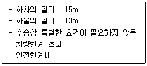

철도운송산업기사 (2005-03-20 기출문제)
1과목: 여객운송
1. 동일지점에 서로 다른 신호의 현시 있는 경우의 취급 중 틀린 것은?
- 상치신호기가 주의신호이고, 폭음신호 있을 때는 정지신호에 의하여야 한다.
- 고장통보 받은 장내신호기에는 정지신호 있으나 진행수신호 있을 때는 정지신호에 의하여야 한다.
- 자동폐색신호기에는 감속신호 있으나 화염신호 있을 때는 정지신호에 의하여야 한다.
- 서행신호기 지점에서 정지수신호 있을 때는 정지신호에 의하여야 한다.
(정답률: 알수없음)

2. C.T.C구간에서 신호기 고장시 장내신호기 또는 출발신호기의 대용수신호를 현시할 경우 누구의 지시를 받는가?
- 역장
- 관제사
- 수송안전단장
- 열차운용팀장
(정답률: 알수없음)
3. 유도신호가 현시된 경우의 설명 중 맞는 것은?
- 일단정차 후 10km/h이하로 진입이 가능하다.
- 일단정차 후 15km/h이하로 진입이 가능하다.
- 일단정차 후 20km/h이하로 진입이 가능하다.
- 일단정차 후 25km/h이하로 진입이 가능하다.
(정답률: 알수없음)
4. 완급차의 공기제동기 고장인 경우의 조치 중 맞지 않는 것은?
- 공기제동기 사용불능일 경우에는 원칙적으로 교체하여야 한다.
- 차장변 고장시에는 원칙적으로 완급차를 교체하여야 한다.
- 공기압력계 고장시에는 원칙적으로 완급차를 교체하여야 한다.
- 완급차의 교체가 곤란한 경우에는 역장의 지시에 의해 다음역까지 운전할 수 있다.
(정답률: 알수없음)
5. 정거장에 대한 설명 중 틀린 것은?
- 상치신호기의 취급을 하기 위하여 설치한 장소
- 여객 또는 화물을 취급하기 위하여 설치한 장소
- 열차의 조성 또는 차량의 입환을 하기 위하여 설치한 장소
- 열차의 교행 또는 대피를 하기 위하여 설치한 장소
(정답률: 알수없음)
6. 열차를 조성하는 경우 차량의 연결에 대한 설명이다. 옳은 것은?
- 불에 타기쉬운 화물적재화차는 동력을 가진 기관차로부터 1차 이상 격리하여야 한다.
- 여객열차이외의 열차에 화약류 적재화차를 열차의 중간에 연속 연결하되 4량을 초과하여서는 안된다.
- 추진운전의 경우 동력차를 열차의 중간에만 연결하였을 때는 완급차는 열차의 맨 앞 및 맨 뒤에 연결하여야 한다.
- 화물호송인 승용차량과 위험품적재화차는 3차이상 격리하여야 한다.
(정답률: 알수없음)
7. 사고복구에서 가장 우선순위를 두어야 하는 것은?
- 인명의 보호
- 본선의 개통
- 민간재산의 보호
- 철도재산의 보호
(정답률: 알수없음)
8. 다음 중 운전취급규정의 적용을 받지 않을 수도 있는 곳은?
- 정거장외 측선
- 정거장외의 전용선
- 차량정비공장 전용선
- 보선장비 유치선
(정답률: 알수없음)
9. 복선구간에서 병용 취급시의 폐색방식으로 맞는 것은?
- 연동폐색식과 지도통신식
- 연동폐색식과 지도격시법
- 자동폐색식과 지도통신식
- 자동폐색식과 지도격시법
(정답률: 알수없음)
10. 공기제동기 및 제동감도 시험 중 가장 거리가 먼 것은?
- 열차에 사용하는 동력차를 교체 또는 해방하거나 연결하였을 때는 제동시험을 하여야 한다.
- 운행중 동력차의 연결위치를 변경하였을 때는 제동시험을 하여야 한다.
- 특히 지정한 구간에 열차 진입할 때 제동시험을 하여야 한다.
- 기관사는 열차를 시발하거나 도중 인수하여 출발할 때 45km/h이상의 속도에서 재동감도 시험을 하여야 한다.
(정답률: 알수없음)
11. 사고발생시의 조치 중 맞지 않는 것은?
- 안전하고 신속하게 조치한다.
- 인명과 화물의 피해를 최소한도로 그치도록 한다.
- 사고의 상황과 원인이 정확히 파악될 때까지 보고를 미룬다.
- 열차운행의 혼란을 방지하여야 한다.
(정답률: 알수없음)
12. 페색구간의 설정 및 경계에 대한 설명 중 맞지 않는 것은?
- 본선은 이를 폐색구간으로 나누어 열차를 운전한다.
- 폐색구간은 인접의 정거장 또는 신호소간을 1폐색구간한다.
- 자동폐색식을 시행하는 구간의 정거장내의 본선은 폐색구간으로 하지 않는다.
- 자동폐색식을 시행하는 구간의 폐색구간의 경계는 폐색신호기, 장내신호기, 출발신호기의 지점이다.
(정답률: 알수없음)
13. 다음 지도식에 관한 설명 사항 중 맞지 않는 것은?
- 운전허가증은 열차를 폐색구간에 진입시킬 시각 5분 이전에 기관사에게 교부할 수 없음
- 운전허가증은 지도표뿐이며 1폐색구간에 1매만 사용가능
- 사고현장과 정거장간을 1폐색구간으로 함
- 후속열차가 필요 없을 때 한하여만 이를 시행함
(정답률: 알수없음)
14. 다음의 바람의 세기 중 가장 센 바람은?
- 왕바람
- 큰바람
- 센바람
- 노대바람
(정답률: 알수없음)
15. 다음 중 전령법에 대한 설명 중 거리가 먼 것은?
- 고장열차 있는 폐색구간에 폐색구간을 변경하지 않고 구원열차를 운전할 때
- 선로고장의 경우 전화불통으로 관제사의 지시를 받지 못할 경우
- 정거장외에 차량이 굴러갔거나 차량을 남겨놓은 폐색구간에 그 폐색구간을 변경하지 않고 이를 회수하기 위하여 구원열차를 운전할 경우
- 전령법 시행시 제한속도는 45km/h 이하이다.
(정답률: 알수없음)
16. 다음 중 1폐색구간에 2이상의 열차가 동시에 운전할 수 없는 폐색방식은?
- 지도통신식
- 지도격시법
- 격시법
- 전령법
(정답률: 알수없음)
17. 제동시험완료시 이를 역장에게 알려야 하는 직원은?
- 수송원
- 객화차검수원
- 차장
- 기관사
(정답률: 알수없음)
18. 다음 중 운전취급규정에서 따로 정한 사항이 아닌 것은?
- 본선의 명칭 및 순위
- 본선의 운전기본방향 기준
- 정거장외 본선 선로의 명칭기준
- 운전취급 생략 정거장
(정답률: 알수없음)
19. 환승승차권의 운임·요금에 대한 설명이다. 틀린 것은?
- 환승승차권의 운임·요금은 승차구간별로 구분한 실거리를 기준으로 계산하여 합산한 금액으로 한다.
- KTX와 일반열차를 상호 환승할 때에는 새마을호·무궁화호·통근열차의 운임의 30%를 할인한다.
- 계산된 운임이 승차권에 표시된 상위열차의 최저운임보다 적은 경우에는 상위열차의 최저운임을 적용한다.
- 최저요금은 각각 구간별로 적용한다.
(정답률: 알수없음)
20. 다음은 여객사령이 KTX 또는 새마을호 열차에 대하여 좌석을 지정하지 않는 승차권의 발매를 지시할 수 있는 경우이다. 틀린 것은?
- 철도공사가 정한 하계대수송기간 중
- 철도공사가 정한 설수송기간 중
- 천재지변으로 다른 교통수단을 이용하기 어려운 경우
- 전산시스템의 장애가 발생한 경우
(정답률: 알수없음)
2과목: 화물운송
21. KR PASS 및 KR PASS 교환권에 대한 설명으로 틀린 것은?
- 사용기간에 따라 3일권, 5일권, 7일권, 10일권으로 구분한다.
- KR PASS 청소년(YOUTH)은 13세부터 25세까지의 청소년 및 국제학생여행연맹에서 발급한 국제학생증 소지자에게 발급한다.
- KR PASS 어린이(NOMAL-CHILD)는 4세에서 12세까지의 어린이에게 발급한다.
- KR PASS 동승(SAVER)은 2인에서 4인이 같은 일정으로 여행하는 조건으로 발급한다.
(정답률: 알수없음)
22. 무궁화호 입석승차권을 출발 1일전에 반환 청구할 경우 발생하는 수수료 금액은? (단, 운임 21,000원일 경우)
- 400원
- 1,⑤0원
- 1,100원
- 2,100원
(정답률: 알수없음)
23. 다음 중 광역전철 승차권의 통용기간으로 맞지 않는 것은?
- 단체권: 승차권의 발매일로부터 열차승차 당일까지
- 무임권 : 발급 당일한
- 보통권 : 개표후 3시간 이내
- 정액권 : 개표후 5시간 이내
(정답률: 알수없음)
24. 새마을호열차의 1km당 임율은?
- 56.10원
- 53.29원
- 83.29원
- 86.10원
(정답률: 알수없음)
25. 철도회원의 운임할인에 대한 설명이다. 맞는 것은?
- 철도회원에 대한 할인은 철도공사가 제공하는 다른 할인과 중복하여 할인하지 않는다.
- 철도회원 본인의 운임에 대하여 1일 2회 할인한다.
- 운임·요금의 5%를 할인한다.
- 철도회원 본인이 아닌 경우에도 할인한다.
(정답률: 알수없음)
26. 좌석을 사용하지 못한 경우의 취급방법으로 틀린 것은?
- 상위차실로는 대체할 수 없다.
- 좌석을 대체한 경우에는 반환하지 아니 한다.
- 냉난방 장치 고장이 발생한 경우에는 운임요금의 25%를 반환한다.
- 좌석중복이 발생한 경우에는 휴대단말기에 의하여 좌석중복을 등록하여야 한다.
(정답률: 알수없음)
27. 운임·요금에 대한 사항 중 틀린 내용은?
- 부득이한 경우 수표의 수취를 거절할 수 있다.
- 철도공사의 영업상 필요한 경우 신용결제를 제한할 수 있다.
- 신용결제한 승차권을 반환시에는 수수료를 공제한 금액을 현금으로 반환한다.
- 운임·요금을 할인할 때 발생하는 50원 미만은 버린다.
(정답률: 알수없음)
28. 부정승차로 취급하여 승차구간에 대한 기준운임·요금과 부가금 30배를 수수하는 경우이다. 틀린 것은?
- 승차권을 위조하거나 기재사항을 변조한 경우
- 무임승차권을 사용하는 철도공사 직원이 철도공사 직원의 신분증 확인 요구를 거부하는 경우
- 일부가 훼손된 승차권을 소지하고 승차한 경우
- 할인승차권을 사용하는 사람이 철도공사 직원의 신분증확인 요구를 거부하는 경우
(정답률: 알수없음)
29. 가리봉역에서 수원역까지 자성승차권을 이용할 경우 받아야 될 광역전철운임은? (단, 가리봉↔수원 영업거리가 27.4㎞일 경우)
- 1,000원
- 1,100원
- 1,200원
- 1,300원
(정답률: 알수없음)
30. 여객운송약관에 정한 입장요금은 얼마인가?
- 수수하지 아니한다.
- 400원
- 500원
- 600원
(정답률: 알수없음)
31. 다음은 승차권 분실에 관한 설명이다. 틀린 것은?
- 승차권을 분실한 경우 철도공사는 승차권을 분실한 사람의 운송·변경·반환 등의 청구에 응하여야 한다.
- 유효기간이 남아 있는 승차권을 분실한 사람은 1회에 한하여 소정의 금액을 지급하고 분실증명서를 발행받아 운송을 청구할 수 있다.
- 좌석을 지정하지 않은 승차권, 전자승차권, 승차권발권확인서는 분실증명서를 발행하지 아니 한다.
- 분실한 승차권을 찾은 경우에는 해당 승차권과 분실증명서를 역에 제출하고 분실증명서를 교부받을 때 지급한 금액의 반환을 청구할 수 있다.
(정답률: 알수없음)
32. 다음 중 일반열차가 40분 이상 지연되어 여행시작전 여행을 포기하는 경우 반환액으로 타당한 것은?
- 운임·요금의 30%
- 운임·요금의 50%
- 운임·요금의 100%에서 반환수수료를 공제한 금액
- 운임·요금의 100%
(정답률: 알수없음)
33. 다음 중에서 할인카드에 대한 설명으로 틀린 것은?
- 새마을호열차 승차권을 예매하는 경우에는 기준운임의 15%를 할인한다.
- 동반카드는 1회 최대 9매까지 예매할 수 있고 6개월용은 40회까지 이용할 수 있다.
- 청소년카드는 13세이상 25세미만의 사람이 사용할 수 있는 카드이다.
- 유효기간의 연장은 유효기간 종료한 다음날부터 1개월이내에 1회에 한하여 연장을 청구할 수 있다.
(정답률: 알수없음)
34. 다음 중 화물운송세칙에서 정하는 탁송금지 화물이 아닌 것은?
- 점화, 점폭약류를 붙인 폭약
- 니트로글리세린과 건조한 기폭약
- 뇌홍, 질화연의류
- 휘발유, 항공유
(정답률: 알수없음)
35. 용산역에서 출발하는 일반차급화물 10량에 대하여, 발역에서 적재통지가 끝난 이후에 화주로부터 탁송취소를 요구하였다. 이에 대한 탁송변경료는 얼마인가? (단, 부가가치세 제외, 탁송취소료는 일반화물에서 1량당 22,500원일 경우)
- 22,500원
- 112,500원
- 225,000원
- 67,500원
(정답률: 알수없음)
36. 적하시간 연장 및 단축에 대한 설명으로 옳은 것은?
- 필요하다고 인정하는 경우 적하시간 연장 및 단축은 지역관리역장의 승인을 얻는다.
- 적하시간 연장 취급은 EDI에 의해 처리한다.
- 대리하화를 할 경우 수화인에게 통지한다.
- 적하시간의 단축 또는 연장을 제한할 필요가 있다고 인정할 때에는 지역관리역장이 이를 지정하여야 한다.
(정답률: 알수없음)
37. 갑종철도차량을 운송하기 위하여 보조차를 사용할 경우 보조차의 운임계산톤수는?
- 표기자중톤수의 1/2
- 표기자중톤수의 100분의 80
- 표기자중톤수의 100분의 60
- 표기자중톤수
(정답률: 알수없음)
38. 열차지정화물이 최저운임에 해당될 경우 운임수수는?
- 최저운임에 100분의 20을 가산하여 수수한다.
- 열차지정 유무에 불구하고 최저운임을 수수한다.
- 열차지정운임할증을 하여도 최저운임에 해당될 때 최저운임을 수수한다.
- 열차지정료는 수수하지 않는다.
(정답률: 알수없음)
39. 공사는 특별한 사유에 대하여 화주가 면책특약 조건을 승낙한 경우 화물을 수취할 수 있다. 면책특약 조건에 해당되지 않는 것은?
- 연착승낙
- 포장불비 승낙
- 도착통지 필요없음 승낙
- 화물사고 승낙
(정답률: 알수없음)
40. 3. 1∼3. 31까지 익산역 화물헛간(면적 100m2)사용을 승인한 경우 수수할 하치장 사용료는 얼마인가? (단, 부가가치세 제외, 운임인상일 3월 11일부터, 개정 전요율 : 갑지 2,000원, 을지 1,287원, 개정 후 요율 : 갑지 2,280원, 을지 1,387원)
- 7,068,000원
- 4,299,700원
- 6,788,000원
- 6,798,000원
(정답률: 알수없음)
3과목: 열차운전
41. 다음 중 임시약속으로 운송할 화물에 해당되지 않는 것은?
- 차량의 한계를 초과하지 않는 화물
- 위험품
- 열차를 지정하여 운송을 청구하는 화물
- 화물취급역이 아닌 장소에서의 임시 취급하는 화물
(정답률: 알수없음)
42. 호송화물별 호송인의 휴대품에 대한 설명 중 틀린 것은?
- 화약류 수송에는 소화기(A·B·C형)
- 산류 수송에는 방독면, 보호의, 장갑, 중화제(소석회 10kg), 밸브용 공구
- 압축 및 액화가스류 수송에는 방독면, 보호의, 누설탐지기, 소화기, 밸브용 공구
- 휘산성독물 수송에는 소화기 (A·B·C형)
(정답률: 알수없음)
43. 다음 중 사업용화물의 취급방법으로 잘못된 것은?
- 송화인은 물품출납담당으로만 제한한다.
- 수화인은 물품출납담당으로 제한한다.
- 화물취급역 이외의 개소에서 분기하는 비영업선의 수탁업무는 최근처의 화물취급역에서 담당한다.
- 자갈선에서 하화하는 경우 인도업무는 자갈선 관리역에서 담당한다.
(정답률: 알수없음)
44. 호송인을 승차시켜 화물을 보호, 관리하도록 해야 하는 화물은?
- 용기 또는 발틀을 사용하는 동물
- 학술연구, 범죄수사용 사체
- 사유, 대여, 전용화차를 제외한 갑종철도차량
- 재판감정용 사체
(정답률: 알수없음)
45. 화물수송지침의 용어정의 중 틀린 것은?
- 화물수송지침의 용어의 정의에서 언급된 역은 조성역, 분계역 등 4가지로 구분한다.
- 수선차라 함은 입창대기차 및 재창차를 포함한다.
- 석탄이라 함은 무연분탄, 괴탄, 흑연, 경석의 4가지를 말한다.
- 특수위험품이라 함은 화약류, 압축가스 및 액화가스를 말한다.
(정답률: 알수없음)
46. 화물최저톤수기준표에 정한 비율을 적용할 수 없는 화물의 경우, 운임계산톤수는 어떻게 적용하는가?
- 표기하중의 100분의 60
- 표기하중의 100분의 70
- 표기하중의 100분의 80
- 표기하중의 100분의 90
(정답률: 알수없음)
47. 다음 중 화물의 최저톤수 특정으로 맞지 않는 것은?
- 파렛트를 사용 운송하는 화물은 사용화차 표기하중톤수의 100분의 50
- 소단위차급화물의 최저톤수는 사용화차 표기하중톤수의 100분의 60
- 차장차 적재화물의 최저톤수는 10톤
- 톤단위차급화물의 최저톤수는 사용화차 표기하중톤수의 100분의 80
(정답률: 알수없음)
48. 운송책임의 면책 조건 중 틀린 것은?
- 유개화차에 적재할 화물을 무개화차에 적재하여 발생한 손해
- 호송인이 승차하지 아니한 화물에 대하여 발생한 손해
- 화차 1량에 2품목 이상을 적재하여 발생한 손해
- 봉인을 하지 않은 화물로 화차의 문을 전부 또는 일부를 열음으로 발생한 손해
(정답률: 알수없음)
49. 다음 중 역장이 화차배정 비율을 책정할 때 고려해야 할 사항과 거리가 먼 것은?
- 생산능력
- 하화선 차입능력
- 수송실적
- 출하능력
(정답률: 알수없음)
50. 화약류를 적재시 사용하는 화차는?
- 나무판으로 내장된 강철 유개화차
- 나무판으로 내장된 강철 무개화차
- 고무판으로 내장된 강철 유개화차
- 고무판으로 내장된 강철 무개화차
(정답률: 알수없음)
51. 발·착역이 현재역의 관할 지역본부에 속하지 않는 발송정비차란?
- 통과차
- 중계차
- 회송차
- 발송정비차
(정답률: 알수없음)
52. 다음 중 용어의 정의에 대한 설명으로 맞는 것은?
- 비영업차라 함은 화물영업용으로 사용할 수 있는 화차로 사장이 지정한 화차를 말한다.
- 발송정비차라 함은 자역에서 발송 준비 중인 화차와 수선차를 제외한 자역착발 이외의 화차를 말한다.
- 사용차라 함은 당일 사용한 화차로서 화물운송통지서를 발행한 화차를 말한다.
- 소요차라 함은 역의 화물취급 시설, 입환 및 적재능력 또는 수송제한의 범위내에서 당일 중 사용을 필요로 하는 화차를 말한다.
(정답률: 알수없음)
53. 승인대상 특대화물의 전철구간의 안전한계는 레일면 위로부터 몇 mm 높이를 초과할 경우 관할 지역본부장에게 운송승인 요청을 하여야 하는가?
- 3,900mm
- 4,200mm
- 4,300mm
- 4,500mm
(정답률: 알수없음)
54. 아래와 같은 화물의 신청이 있는 경우 발송역장이 수탁할 수 있는 것은?

- 서울역 경유 일산역발 인천역착 화물
- 금호역 경유 동대구역발 포항역착 화물
- 송정리역 경유 보성역발 순천역착 화물
- 영주역 경유 김천역발 강릉역착 화물
(정답률: 알수없음)
55. 다음 중 보통급소화물로 탁송할 수 없는 경우는?
- 중량 110키로그램의 오토바이
- 수성페인트
- 주한미군 경비견
- 수출입서류
(정답률: 알수없음)
56. 소화물의 적하비용과 중계를 위한 환적비용은 누가 부담하는가?
- 화주
- 위탁업체(대한통운)
- 한국철도공사
- 하역업체(항운노조)
(정답률: 알수없음)
57. 도착소화물에서 공매에 부칠 수 없는 경우는?
- 부패 및 변질의 염려가 없을 때
- 부패, 변질의 염려가 있을 때
- 일시의 경과로 인하여 현저하게 가격을 감할 염려가 있을 때
- 보관시 과다한 비용이 필요할 때
(정답률: 알수없음)
58. 현급 취급을 하는 특별급소화물의 운임·요금의 수탁시 발행하는 장표는?
- 제요금표
- 화물운송장
- 소화물표
- 운임요금 영수증
(정답률: 알수없음)
59. 계약의 성립 시기에 대하여 맞는 것은?
- 고객이 운임·요금을 현금으로 선급 하였을 때
- 후급 또는 착급(전산장비 설치역에 한함)으로 하였을 때
- 운임·요금을 현금으로 지급하고, 물표류 등 그 계약에 관한 증표를 교부 받은 때
- 귀중품의 경우에는 정해진 약관에 따라 운임·요금을 현금으로 지급하고, 물표류 등 그 계약에 관한 증표를 교부 받은 때
(정답률: 알수없음)
60. 도착 소화물로서 인도불능 사유가 발생한 경우의 취급 방법 중 틀린 것은?
- 기간을 정하여 발역 경유 보낸고객의 지시를 구한다.
- 인도에 관하여 분쟁이 있을 때는 보낸고객의 지시를 구한다.
- 고객이 수령을 거절할 때는 보낸고객의 지시를 구한다.
- 보낸고객의 소재가 불분명할 때에 관계기관에 신고등의 조치를 하여 지시를 구한다.
(정답률: 알수없음)